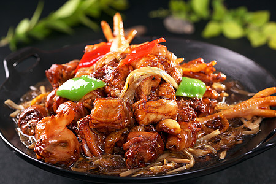

BEST
CINESE FOOD
IN FLORENCE
CHINESE CUISINE
CHINESE CUISINE by CANDLELIGHT
Just a few steps from the Duomo, right in the historical heart of Florence, the Paiolo restaurant has been giving a warm welcome to clients in its convivial and cosy surroundings for
over thirty years.
The Paiolo showcases renowned Florentine dishes along with traditional rustic Tuscan cuisine. All dishes are lovingly prepared with carefully sourced, quality ingredients.
The renowned ‘Bistecca alla Fiorentina’ is the Paiolo’s speciality to be accompanied with a bottle of wine from our vast selection of the best of local, Italian and international wines.

Atmosphere
A ROMANTIC AND WELCOMING ATMOSPHERE JUST A FEW STEPS FROM THE DUOMO
A romantic and welcoming atmosphere just a few
steps from the Duomo The Paiolo is located on Via
del Corso, one of the most charming streets in the
centre of Florence. Its welcoming, intimate and
candlelit ambience offers the perfect setting for a
romantic evening whilst savouring authentic Tuscan cuisine.
|
 |